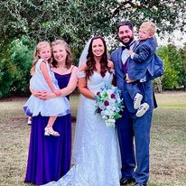

Goals are just the end efforts of an individual's attempt for a purpose, or an ambition!
- We all at one point in time, or another, have set goals for ourselves in an attempt to better the world we live in.
- Failing at these goals is always a constant in life. It is how we are taught to succeed where we once failed. It is the effort for which we put into these goals that give a feeling of accomplishment once we attain the goal we where chasing.
- Everyone's goals are not always the same. Some of our goals may align with others which can make acheiving a goal easier. Other times we try and conquer or goals on our on and it can be quite a task!
- Needless to say goals can be overwhelming to achieve, but once that goal is met it is a great feeling of accomplishment. No mater how small, or big, the goal was!
My goals at this time in my life are as follows:
- Become a better husband for my wife! This is an everyday goal where I am always learning more about myself and what I can be for my wife! Strong, confident, a best friend, a voice of reason, a shoulder to lean on, and ear to talk to without fear of judging, a problem solver, and a provider.
- I want to be the best Stepdad I can possible be for my 3 Stepkids. They are always watching everything I do! I want to be a better listener, provided, a strong voice to follow, some one they can always look up too, and the best Dad they could ever have.
- I want to get my college degree. This is something I have recently started all because of becoming a husband, and a dad, have changed my views on life! I was always been afaird of failing in school and once I was out and in the work world I never looked back. Now having a family that is supporting me has given me strength to overcome my fears. My purpose for school is to better myself for me and my family! I want to create a good life for us as a team.
